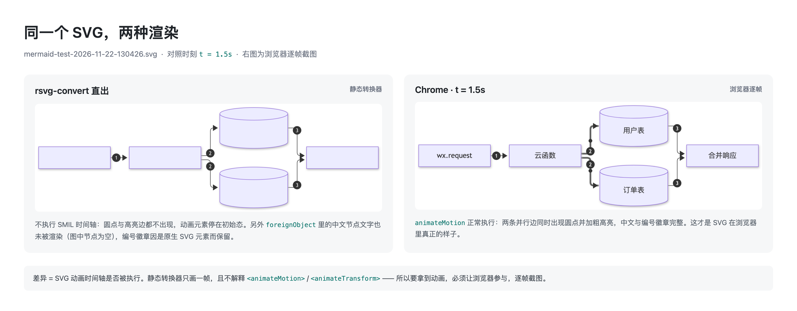
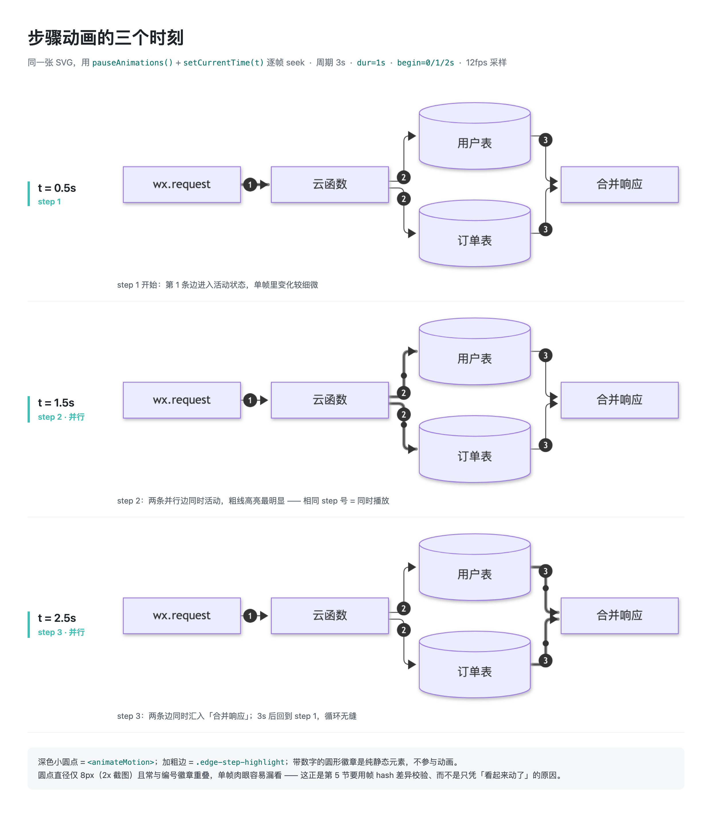
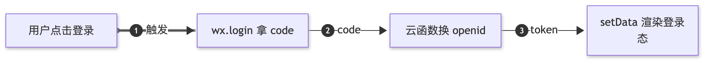

说明：mermaid 生成的 svg 在浏览器里可以显示
|
做课件时需要一张能讲「请求顺序」的图：点登录 → 拿 code → 换 openid → 渲染登录态。Mermaid 的步骤动画正好能沿边依次播放，我给三条边标上 step 1/2/3，再用命令行工具 mmdc 导出成 SVG。
文件落到磁盘上，我断言「静态导出物不会动」。在 Chrome 里打开，圆点在边上跑了起来。这句话错在把「导出成文件」当成了「变成静态」：SVG 可以自带动画声明，浏览器打开时照样执行；只有转成 PNG 那一类栅格格式，才真的定格一帧。后来要把这张图放进 PPT，才遇到第二个问题：怎么把浏览器里的时间轴，变成一帧帧脱离浏览器也能播的位图。
这篇记的是后一件事。先分清动画是谁在播，再从 SVG 源码里把时间轴读出来，最后逐帧导出并验证。
先看一张对照
| 机制 | 声明写在哪 | 谁执行 | <img> 引入时 |
本例中的对应 |
|---|---|---|---|---|
SMIL |
|
浏览器 SVG 引擎 |
照跑 |
圆点移动、当前边高亮 |
CSS |
SVG 内 |
浏览器 CSS 引擎 |
照跑 |
虚线流动、减少动态效果时隐藏 |
JavaScript |
|
JS 引擎 |
被禁用 |
本例不用 |
前两种是自包含的：动画声明就在 .svg 文件里，不需要 Mermaid 运行时。所以 Chrome 直接打开会动，用 <img src="x.svg"> 引进网页通常也会动——图片上下文只禁脚本，不禁 SMIL 和 CSS。
1. 动画写在 SVG 里，不在 mmdc 里
定位 先确定执行主体。mmdc 把 Mermaid 源码渲染成一份 SVG 文本，写完文件就退出；浏览器打开这份 SVG 时才解析其中的动画声明。把 SVG 换成 GIF，不是「让动画动起来」，而是把浏览器已经会播的时间轴，改成一帧帧位图。
做法 打开导出的 SVG，能找到三处声明：
<!-- 圆点沿边移动：SMIL -->
<circle class='edge-step-dot' r='4' transform='translate(164,118.6) scale(0)'>
<animateMotion begin='0s;step_..._e1_step.end+2s' dur='1s'
id='step_..._e1_step' path='M164,118.6L200,118.6'/>
<animateTransform attributeName='transform' type='scale' values='1;1' dur='1s'/>
</circle>/* 当前边高亮，以及减少动态效果时隐藏 */
.edge-step-highlight { stroke-width: 4; stroke-opacity: .6; }
#my-svg .edge-step-dot, #my-svg .edge-step-highlight { display: none; }
}编号徽章则是纯静态元素，没有任何动画属性：
<g class='edge-step-badge' data-step='1'><circle r='9'/><text>1</text></g>边界 徽章正因为不参与动画，成了唯一在所有环境都稳的顺序标记。@keyframes dash 那条虚线流动是 CSS 动画，跟步骤动画无关，别混为一谈。另外节点里的中文在 <foreignObject> 里，是 HTML 文本而不是 SVG 原生 <text>——这一点在第 2 节会变成关键差异。
检验方法 grep -oE "animateMotion|@keyframes|<script" x.svg。命中 SMIL 或 CSS、又没有 <script>，就说明这份 SVG 自包含，不需要 mermaid.js 也能动。
2. 静态转换器为什么不行
定位 拿到自包含 SVG，最省事的想法是让 rsvg-convert、cairosvg 或 ImageMagick 直接转。它们不实现 SVG 动画时间轴，只按当前 DOM 状态画一帧。
做法 用同一个文件直出一次（把路径换成自己的 SVG）：
rsvg-convert -w 1472 your.svg -o /tmp/direct.png
边界 实测结果比「少了动画」更糟：rsvg-convert 也不渲染 <foreignObject> 里的 HTML 文本，节点里的中文全空；编号徽章因为是原生 <circle><text>，反而留下来了。判断依据不是「看着不像」，而是转换器根本不解释 <animateMotion>，动画元素停在 scale(0) 的初始态。图 2 左右两栏把这点摆在一起。
所以要拿到动画，只能让浏览器参与，逐帧截图。
检验方法 把直出图和浏览器帧并排看（图 2）。节点文字为空、又没有加粗边，就说明转换器没跑时间轴；这时调它的参数没有意义。
3. 读时间轴：周期不是查来的
定位 决定 GIF 截多久的是循环周期。这个值不在文档里，也不在命令行参数里，写在 SVG 的 begin 和 dur 上。
做法 从源码摘出一条边：
<animateMotion begin='0s;step_..._e1_step.end+2s' dur='1s' id='step_..._e1_step' .../>| 读到的东西 | 值 | 推出的结论 |
|---|---|---|
|
|
每条边播 1 秒 |
首次 |
|
三步依次开始 |
重复基准 |
|
自身结束后再等 2 秒 |
单条边周期 |
|
每 3 秒重播一次 |
整体 |
|
每秒换一步，无停顿，3 秒一轮 |
取 0–3 秒做循环，第 3 秒正好回到 step 1，首尾无缝。图 1 是同一张图在 0.5 / 1.5 / 2.5 秒的三帧。

边界 相同 step 号表示同时播放，不是顺序播放：并行分支里两条边都标 step: 2，会一起亮。若动画改由 CSS 写，这套读法要换成 animation-duration 与 animation-iteration-count，先确认执行主体再读参数。
检验方法 换一张图，先 grep -o "begin='[^']*'" x.svg 看重复基准是不是 id.end+Ns；是，周期就是 dur + N。
4. 逐帧采样的两个判断
定位 有了周期，还要决定怎么把时间轴变成确定的帧序列。
做法 核心只有四行：
await page.emulateMediaFeatures([{ name: 'prefers-reduced-motion', value: 'no-preference' }]);
await page.evaluate(() => document.querySelector('svg').pauseAnimations());
await page.evaluate(t => document.querySelector('svg').setCurrentTime(t), i / FPS);
await el.screenshot({ path: `f_${String(i).padStart(3, '0')}.png` });再交给 ffmpeg 合成：
ffmpeg -framerate 12 -i f_%03d.png \
-filter_complex '[0:v]split[a][b];[a]palettegen=stats_mode=full[p];[b][p]paletteuse=dither=sierra2_4a' \
-loop 0 -gifflags +transdiff out.gif边界 三个容易漏掉的点：
-
prefers-reduced-motion必须显式设为no-preference。SVG 里那条@media会在 reduce 时把圆点和高亮display:none，不报错、不提示，转出来就是一张静态图。 -
用
setCurrentTime(t)而不是sleep。截图本身要几十毫秒，靠睡眠采帧会让间隔漂移，循环接缝顿一下；seek 是确定性的，同一时刻重截得到同一帧。 -
独立 SVG 文档里
document.documentElement就是根<svg>，把 width/height 钉到 viewBox 尺寸能去掉多余留白；width='100%'在独立文档里会按视口撑开。
检验方法 截 0.3 / 1.3 / 2.3 秒三帧比 hash，再回到 0.3 秒比一次。前三帧互不相同、首尾一致，说明 seek 生效。
5. 验证：别只看退出码 0
定位 上面每一步都可能「成功但没做对」，需要三层验证。
做法 第一层查产物结构：
ffprobe -v error -select_streams v:0 \
-show_entries stream=nb_frames,width,height -show_entries format=duration \
-of default=nw=1 out.gif本次三张产物都是 36 帧 / 3.000s，尺寸 1928×170、1928×170、1472×458，29–46 KB。
第二层查帧 hash：36 帧里分别有 30、27、34 帧互不相同。若只有一两种帧，动画根本没跑起来，第 4 节那个 reduced-motion 是最常见的元凶。
第三层抽首、中、尾帧肉眼看。
边界 这一层也纠正了我的一个想当然：圆点 r=4，2x 截图里只有 8px，还常和编号徽章叠在一起，单帧几乎看不见；稳定可辨的是当前边被加粗高亮。所以「看起来动了」不能当判据，帧 hash 差异才是。图 1 的图注写明了这点。
检验方法 三层里任一层不过就停：帧数不对查采样循环，hash 只有一两种回去查 reduced-motion，肉眼看不出变化就把图放大看当前边的加粗高亮。
6. 什么时候留 SVG，什么时候出 GIF
定位 决定产物的不是清晰度，是目标环境有没有 SVG 运行时。
做法 按目标环境选：
| 环境 | 动画 | 编号徽章 | 用哪个 |
| --- | --- | --- | --- |
| Chrome 直接打开 .svg | 动 | 在 | 留 SVG |
| 网页 <img src="x.svg"> / inline SVG | 动 | 在 | 留 SVG |
| mmdc -o x.png | 定格 | 在 | 讲义截图 |
| PPT / Word / PDF / 打印 | 定格 | 在 | 出 GIF |
| 微信、公众号等只认位图的地方 | 定格 | 在 | 出 GIF |
| GIF 逐帧位图 | 动 | 在 | 任何环境 |
| 系统开「减少动态效果」 | 圆点与高亮被隐藏 | 在 | 靠徽章 |
边界 系统偏好只影响 SVG 里那条 CSS 规则，GIF 是位图，不受影响。所以「徽章在所有环境都在」这句结论，正是靠它不参与动画得到的。GIF 的价值不是「更清楚的 SVG」，而是不依赖 SVG 运行时。
检验方法 把文件插进目标环境看一眼。PPT、Word、PDF、打印预览这些地方，SVG 动画一律定格，别指望它。
7. 怎么做
-
先
grep确认动画机制是 SMIL / CSS 还是 JS，判断 SVG 是否自包含。 -
从
begin/dur推出循环周期，别凭感觉定 GIF 时长。 -
用浏览器逐帧 seek，显式关掉 reduced-motion；别用 sleep，也别用静态转换器。
-
ffprobe查帧数与时长 → 帧 hash 查差异 → 抽帧肉眼看。 -
网页留 SVG，PPT / Word / 公众号出 GIF；讲义再单独出一张 PNG。
-
版本细节照文末备注核一遍，别只报
mmdc --version。
附录 A：课堂用法
讲义要的是顺序，课堂演示要的是过程，两者对产物的要求正好相反。下面这段 Mermaid 源码开了 stepNumbers，把它存成 login.mmd 后按目标环境分别导出：
下面用了 mermaid 12.3.0 的步骤动画语法。掘金内置 Mermaid 版本较旧，标
mermaid会渲染失败，这里按纯代码展示；要看效果贴到 mermaid.live 或用本地mmdc出图。
---
config:
flowchart:
stepNumbers: true
---
flowchart LR
U["用户点击登录"] e1@--> L["wx.login 拿 code"]
L e2@--> S["云函数换 openid"]
S e3@--> V["setData 渲染登录态"]
e1@{ step: 1 }
e2@{ step: 2 }
e3@{ step: 3 }mmdc -i login.mmd -o login.svg # 课堂演示，浏览器里播动画
mmdc -i login.mmd -o login.png # 讲义 / PPT，定格但徽章可读
NODE_PATH="$(pnpm root -g)" node make-gif.js # 出可在任何环境播放的 GIF
e1@-→ 给边起 ID，e1@{ step: 1 } 单独一行声明顺序；相同 step 号并行播放，适合讲并发请求（云函数同时查用户表和订单表）。静态导出时圆点不播，但 stepNumbers: true 打开的编号徽章是画进图里的，打印、投屏、PDF 都能读顺序，所以讲义优先用徽章。
附录 B：脚本与素材
配套脚本做的事就是第 4 节那四行的循环：探测本机 chrome-headless-shell → 逐帧 setCurrentTime(t) 截图 → ffmpeg 合成 GIF。输入是任意带 SMIL 动画的 SVG，输出同名 .gif；把 src/ 换成自己的文件即可复用，不必改脚本。
NODE_PATH="$(pnpm root -g)" node make-gif.jsNODE_PATH 是因为 puppeteer 装在 pnpm 全局目录，普通 require 找不到。脚本会自动探测 ~/.cache/puppeteer/chrome-headless-shell/ 里的可执行文件，也认 PUPPETEER_EXECUTABLE_PATH 和 PUPPETEER_CACHE_DIR。中间帧写在系统临时目录，不污染工作目录。文中两张配图由同一套逐帧截图加一个 HTML 拼版脚本生成，图注里标了各自的来源时刻；附录 A 展示的那个 GIF 是这份脚本的直接产物。
-
脚本文件：js/make-gif.js
-
输入源文件：svg 输入文件

备注：环境与版本
-
本机
mmdc12.2.0（2026-11-02 发布），实际打包的渲染库是 mermaid 12.3.0（2026-11-03 发布）。CLI 的dependencies.mermaid声明为^12.2.0，锁文件解析到 12.3.0——比 CLI 晚一天发布的那个版本。 -
步骤动画是 mermaid 12.3.0 才引入的。解包比对：12.2.0 里
edge-step-dot、stepNumbers、animateMotion一个都 grep 不到；12.3.0 里分别命中 20、28、15 处。若锁在 12.2.0，@{ step: N }会被静默忽略，导出的 SVG 里不会出现animateMotion，不报错也不提示。12.0.0 时代锁的 mermaid 12.1.0 同理。 -
别只报 CLI 版本。全局清单
$(dirname "$(pnpm root -g)")/package.json里的"@mermaid-js/mermaid-cli": "^12.2.0"约束的是 CLI 自己，不是 mermaid；真正的渲染库版本写在同目录pnpm-lock.yaml的 CLI 依赖树段。pnpm update -g会同步改写 specifier（本机从^12.0.0变成^12.2.0）。 -
peer 依赖
puppeteer: ^25.0.0，本机 25.13.0；浏览器只装了chrome-headless-shell@155.0.8059.39。因此puppeteer.executablePath()默认指向的完整版 Chrome 并不存在，会报Browser was not found，脚本改用缓存目录探测。Node 22.22.2，ffmpeg 7.1.1。 -
WorkBuddy 预览面板内置的 Mermaid 是 11.15.0，渲染不了
@{ step: N }和本文附录 A 的 frontmatter 写法；要看效果请贴到 mermaid.live，或用本地mmdc出图。 -
stepNumbers默认false，写在 frontmatter 的config.flowchart下；stepDuration默认 1 秒，只对网页动画生效，静态导出无感。 -
圆点与高亮的隐藏规则由
@media (prefers-reduced-motion: reduce)控制，属于 CSS；编号徽章不受影响。